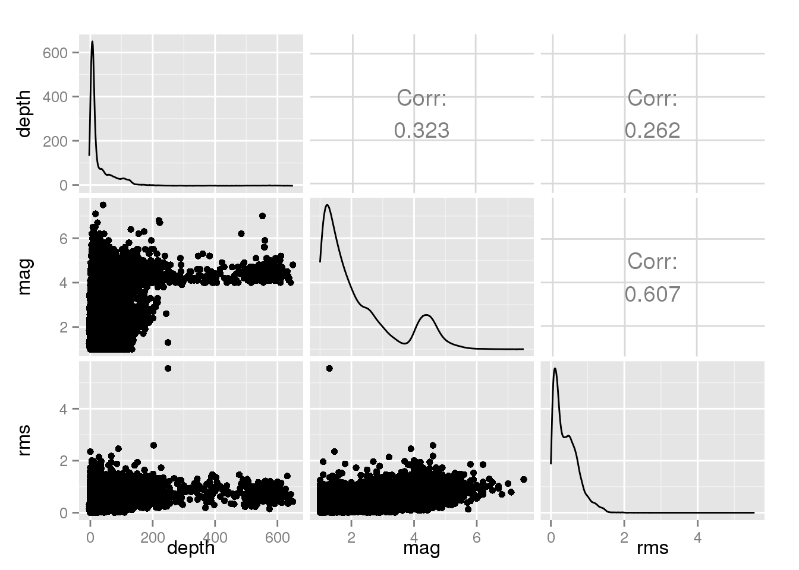

This is a collection of projects I've worked on that I think are particularly cool. Whether created for class projects, formal research, or just for fun (and practice). Feel free to browse the projects on my GitHub page, or take the guided tour of selected projects below. Direct links to the formatted documents (Shiny apps, knitted HTML, or PDF) are provided, as well as to the specific repositories containing the source code.
Click on each header in the accordion to expand the project descriptions.
For any company, better understanding of its customers can give a competitive edge when negotiating contracts. This app, inspired by my time at Mylan (but created on my own time with simulated data), is designed as a tool to help understand customers based on their purchasing behavior and history.
Included in the app are tools for clustering customers based on their contract history and analyzing their purchasing behavior based on market position and types of products bought. There's a detailed readme within the app itself describing these tools in more detail.
Check out the:I designed this workbook while teaching Business Stats at CalU as part of a discussion on displaying and analyzing categorical data. Nothing gets undergrads interested like death and disaster, so I pulled public data on the passengers of the Titanic.
While discussion and conclusions were left up to the students, I designed plots that summarized the individual variables as well as plots showing relationships between two and three variables.
You can check out Tableau Public to see the dashboard. Please note that the app is only designed with desktop layouts in mind.
Apache Storm is a framework for analyzing large volumes of data in real-time. A common example of streaming data is analyzing tweets matching certain keyword, like a company watching for tweets during a marketing campaign.
This project focusing on prototyping a streaming framework using the R package RStorm, allowing for the simulation and prototyping of a stream from within the comfort of the R environment. The project focusing on developing a workflow for analyzing tweets containing the term "Comcast," since they are a company known to stir strong feelings.
The github repository includes source code for an IOSlides presentation and tutorial on the project given at Interface 2015 . A video of the presentation is available on Youtube (I'd recommend streaming in 1080p so the text is easier to read).
Also included is a Shiny Dashboard, designed to illustrate how a live dashboard for monitoring a company's Twitter presence might look.
While I was toying around with topics to analyze on Twitter in grad school, a friend of mine who works for Mylan pointed me towards the stories that were flying around about bidding wars between three generic pharmaceutical companies: Mylan, Perrigo, and Teva. Mylan is a pillar of the Morgantown community, so their being bought out would be huge news in Morgantown.
We pulled the most recent tweets with the hashtag #Mylan on April 24, 2015 and performed sentiment analysis to see what the Twittersphere had to say about the generics wars.
The analysis is here. You can also check out the source code on on GitHub.
The data set includes information about 20,000 global seismic events that occured from January 1, 2015 to April 15, 2015. Links to the final projects are provided, and all of the source code can be found on GitHub .
First, I created an interactive map showing the location of the seismic events using RStudio's Shiny package. Each point represents one event. Events are colored according to event type (earthquake, exposion, etc.) and scaled by magnitude. Because plotting all the events takes a while, the map is restricted to the 8,480 events which occured in the six weeks of March 1, 2015 - April 15, 2015.
Click on the image to the left to access the map.
Please note that this is very much a work in progress, so your patience with bugs is appreciated. The map also seems to hang up a bit in Firefox and Internet Explorer, so I'd recommend running it in Chrome.
This is a basic exploration of the USGS data set, written in R Markdown, including numerical and graphical summaries of the data set.
Check out the EDA here.
First, I wanted to play around with some classification models, so I wanted to see if the three variable describing the seismic event could be used to predict the type of event. While not a practical problem (if there's a large seismic even near me, I care more about the magnitude than what caused it), it is particularly challenging because of the nature of the data: 96.4% of the observations are earthquakes. I tuned several different models and compared their results.
You can see the results here.
For an assignment in a data visualization class, we were tasked with performing an exploratory data analysis (EDA) on the Boston data set in R's MASS package. The data set details the home values in Boston's suburbs in the 70s.
The EDA was first done using R's ggplot package and then repeated using the up-and-coming ggvis package.
You can find the ggplot version here and its source code on GitHub .
This analysis was done as part of my High Performance Computing class. The data set is a sequence file of nearly one-million pageviews of MSNBC.com, where each entry is an integer corresponding to the category of the page the user visited. The day was broken up into ten ranges of time and the categories clustered using Jaccard distances.
The task was first performed with Hadoop directly. Check out the report and the source code .
For the next version, the analysis is repeated using Tessera's Rhipe package, which communicates with Hadoop from within an R session. Here's the Rhipe version, and the source code is on GitHub.
This is a collection of data mining algorithm implementations and derivations completed for our course in the subject.
I'm in the process of cleaning everything up and moving them from local directories to my GitHub page, but you can see what's up so far here: https://github.com/raffled/Data-Mining
During the summer of 2014, I worked with Dr. Kirk Hazen and the West Virginia Dialect Project . The focus at the time was in the voicing of alveolar fricatives. Basically, we wanted to find which sociolinguistic variables, if any, differentiate Appalachians' creation of "s" and "z" sounds.
The data set contained 2,437 distinct observations of words containing "s" or "z" sounds recorded from sixty-seven individuals from across West Virginia, Soutwestern Pennsylvania, and Southeastern Ohio. This paper summarizes my summer work and includes the exploratory data analysis and some descriptive modeling. All analysis was conducted with R, and source code is included in the appendix.
You can check out the paper here and find the source code on GitHub. Note that the data itself is not included in the repository, just the noweb file used to weave the pdf.